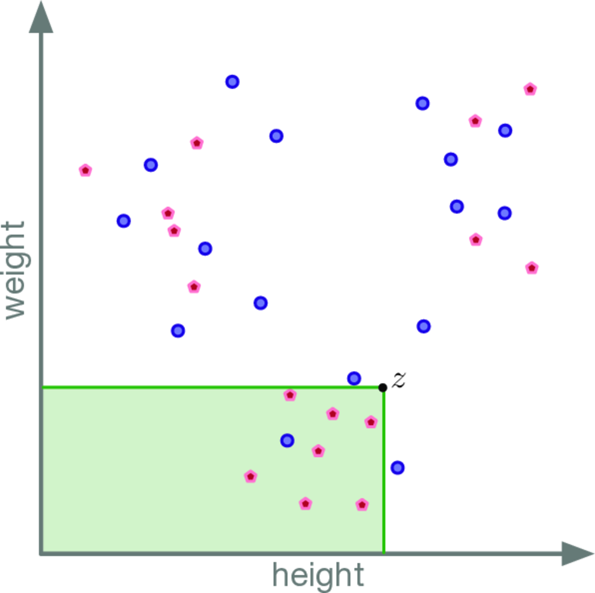
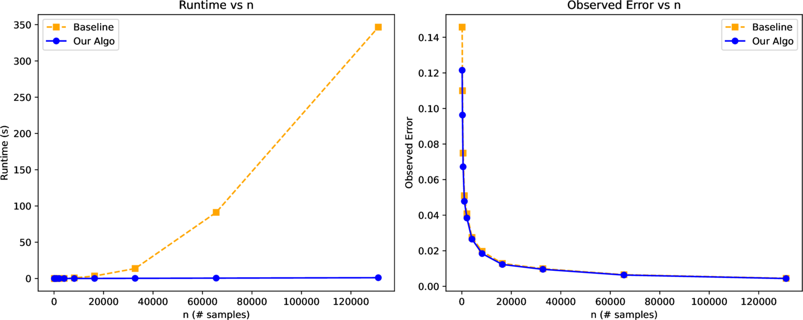

Abstract
We revisit extending the Kolmogorov–Smirnov distance between probability distributions to the multi-dimensional setting, and argue for the proper way to approach this generalization. Our formulation maximizes the difference over dominating orthogonal rectangular ranges (d-sided rectangles in ℝd), and is an integral probability metric. We prove the distance between a distribution and a sample of it converges to 0 as the sample grows, and bound this rate. Up to this same error, the distance can be computed efficiently in four or fewer dimensions — near-linear in the sample size needed for that error — and we derive a δ-precision two-sample test. Finally, we show these metric and approximation properties fail for other popular variants.
The idea
One number for how far apart two distributions are
dKS is the largest gap between the two distributions' multivariate CDFs over lower-orthant ("dominating") rectangles. Because it uses coordinate order rather than Euclidean distance, it's invariant to each axis's units (height vs weight, temperature vs pressure), unlike MMD or Wasserstein.

Key contributions
What the paper establishes
An integral probability metric
An integral probability metric, and a true metric (strong identity property).
Dimension-light sample complexity
Sample complexity O((1/ε²)(d + log(1/δ))), independent of distribution complexity.
Near-linear-time computation
Near-linear-time computation for d = 1,2,3,4 (e.g. O(n log n) in 2D); and evidence d > 4 can't be near-linear without breaking the Max-Weight-k-Clique conjecture.
A finite-sample two-sample test
A δ-precision two-sample test with finite-sample validity — a guaranteed false-positive bound, not asymptotic or Monte-Carlo.
Provably stable
Stable: the popular "quad-KS" variant can change drastically from one data point and has no sample-complexity bound; dKS does.
Results
Fast to compute, accurate at the same rate

Get started
A header-only library with Python bindings
C++
#include <dks/dks.hpp>
std::vector<dks::Point> P = {{0.1,0.2},{0.5,0.7}};
std::vector<dks::Point> Q = {{0.2,0.2},{0.6,0.8}};
double d = dks::approx(P, Q); // fast, O(n log n)
double e = dks::exact(P, Q); // exact, O(n^2)Python
import dks, numpy as np
P, Q = np.random.rand(1000,2), np.random.rand(1000,2)
print(dks.exact(P, Q), dks.approx(P, Q))The full library, command-line tool, and reproducible experiments are available at the GitHub repository.
Citation
Cite this work
@article{jacobs2026dks,
title = {Efficient and Stable Multi-Dimensional Kolmogorov--Smirnov Distance},
author = {Jacobs, Peter Matthew and Namjoo, Foad and Phillips, Jeff M.},
year = {2026}
}